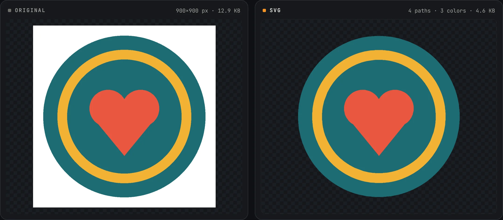
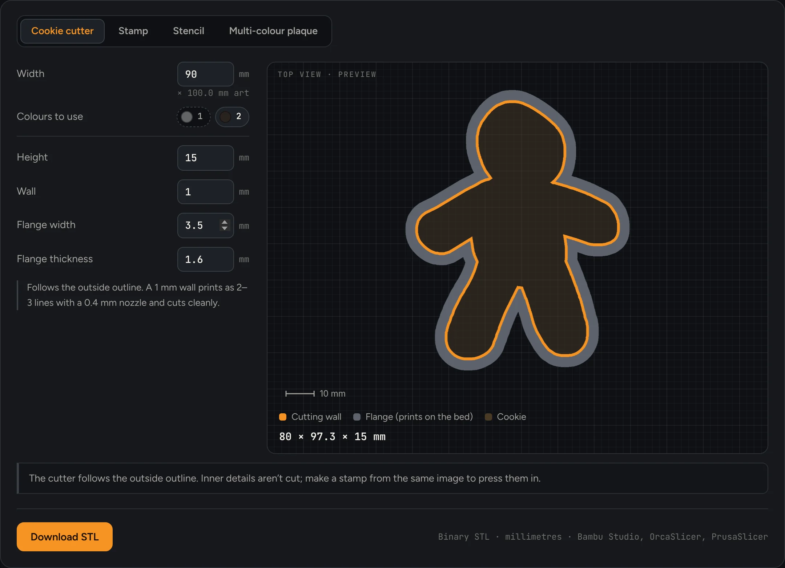
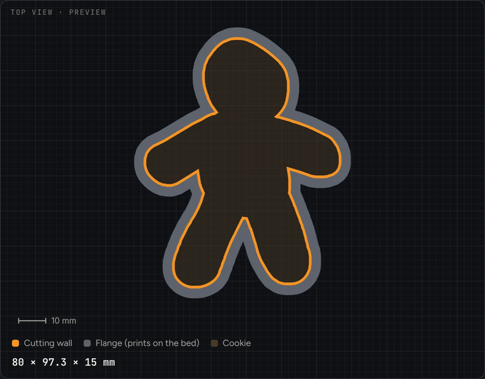
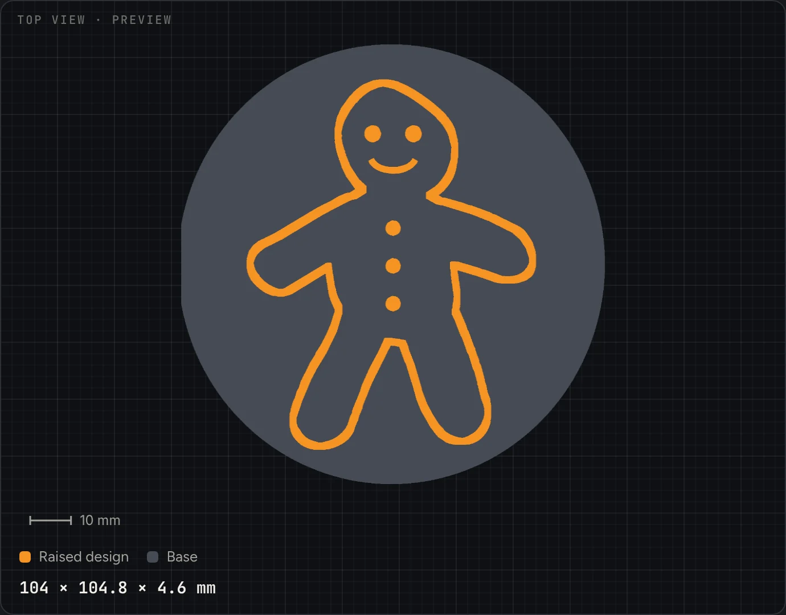
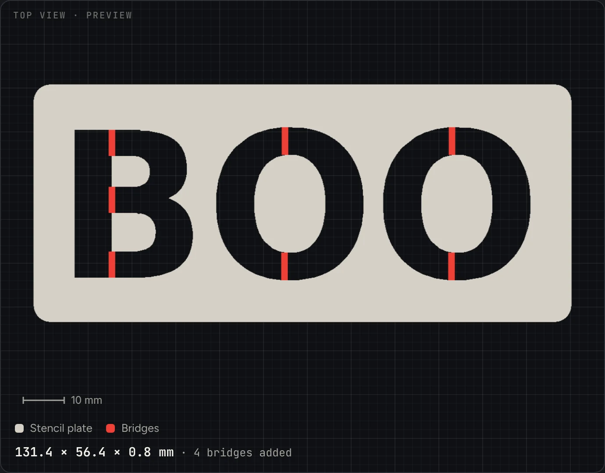
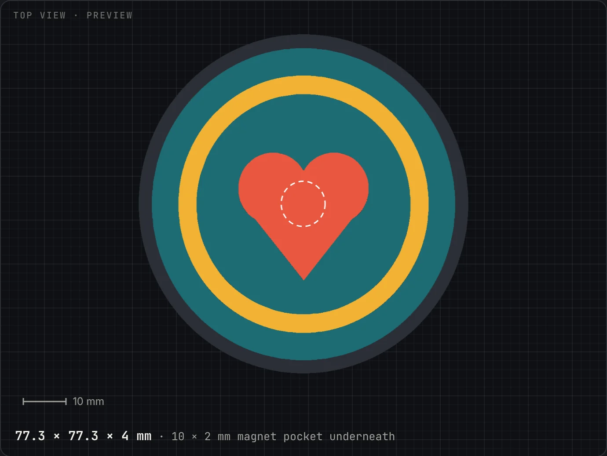
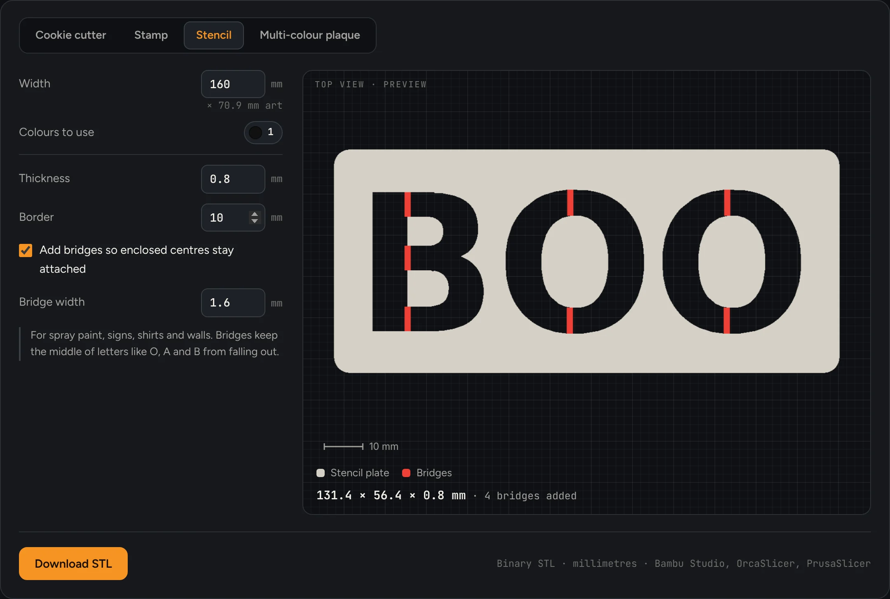
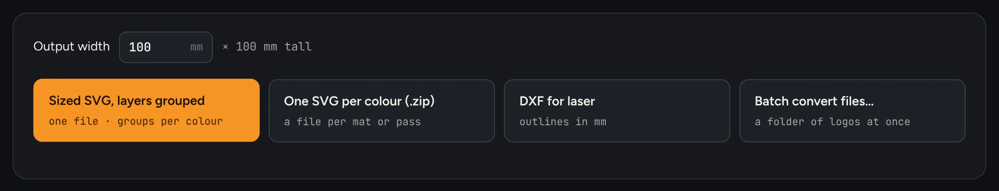

Vectorizer · free PNG to SVG converter
PNG or JPG in. Clean SVG out.
Drop in a logo, icon or drawing and download it as an SVG. It's free with no limit, and the tracing runs in your browser, so your image is never uploaded.
- Input
- PNG, JPG, WebP, GIF, BMP · drop, browse or paste
- Output
- SVG download, or copy the SVG code
- Background
- Remove the backdrop, the enclosed areas too, or keep it
- Presets
- Logo, Simple mark, Black & white, Detailed art
- Cost
- Free and unlimited. No account.
- Uploads
- None. It works on your machine.

Pro · Print it in 3D
Turn your kid's drawing into a cookie cutter.
Take a photo of the drawing, drop it in, and switch to Cookie cutter. Vectorizer follows the outside line and builds a thin cutting wall on a flange that prints flat on the bed. Download the STL, print it, and bake before December gets busy.
For a clean trace from a drawing
- Thick, dark marker on plain white paper.
- Photograph it straight on, in daylight, and crop close.
- Close the outline. With a gap in the line, the cutter can't tell inside from outside.
- Faces and buttons inside aren't cut. Make a stamp from the same drawing to press them in.
3D preview: free · STL download: Pro

-

Cookie cutter
A thin cutting wall plus a flange that prints on the bed. The file is mirrored, because you use the cutter flange-up.
15 mm tall · 1 mm wall · 3.5 mm flange -

Stamp
A base plate with the design raised. Mirrored so the impression reads the right way round, on cookies, clay or fondant.
base: outline, rounded rectangle or circle -

Stencil
A flat plate with the design cut through, for spray paint, signs and shirts. Bridges are added automatically so letter centres stay put.
0.8 mm plate · 10 mm border · 1.6 mm bridges -

Multi-colour plaque
A base and one STL per colour, zipped, for an AMS. Add a magnet pocket underneath and it's a fridge magnet.
one STL per colour · magnet pocket optional

Stencils
The middle of the O stays where it belongs.
Cut an O out of a sheet and its centre falls out, leaving a blob. Vectorizer finds every enclosed island in the design, like the centres of O, A and B, and ties each one to the plate with a thin bridge. "BOO" needs four: two for the B, one for each O.
Set the bridge width to suit your brush or spray. Switch bridges off if you'd rather place the centres by hand.
How it works
One image, four steps, all in the browser tab.
-
Drop in an image
PNG, JPG, WebP, GIF or BMP. Drag it in, browse, or paste from the clipboard.
Free -
Tune the trace
Pick a preset, then adjust colours, detail, smoothing and speckle removal. The SVG redraws as you go.
Free -
Take the SVG
Download it or copy the code. Or set a width in millimetres and export layered SVG, one SVG per colour, or DXF.
Free · exports Pro -
Or print it
Choose cookie cutter, stamp, stencil or plaque, check the preview, and download the STL for your slicer.
Pro
Maker exports
Files that arrive at the right size.
A plain SVG is measured in pixels, so it lands in Design Space or LightBurn at whatever size the software guesses. Pro exports use the width you set in millimetres, and keep each colour on its own layer.

| Format | What you get | Open it in |
|---|---|---|
| SVG Free.svg | The traced paths, sized in pixels. Download the file or copy the code. | Inkscape, Illustrator, Figma, a web page |
| Sized SVG, layered Pro.svg · mm | Your width in millimetres, with each colour grouped on its own named layer. | Cricut Design Space, Inkscape, LightBurn |
| SVG per colour Pro.zip of .svg | One file per colour, so each vinyl colour gets its own mat, or each laser pass its own file. | Cricut Design Space, LightBurn |
| DXF ProDXF R12 · mm | Closed polylines in millimetres, one layer per colour, for laser cutting and engraving. | LightBurn, and CAD or CNC software that reads DXF |
| STL Probinary STL · mm | Cookie cutter, stamp or stencil as one file. A plaque comes as a zip with one STL per colour and a short README. | Bambu Studio, OrcaSlicer, PrusaSlicer |
| Batch Pro.zip | A stack of images converted in one go, each as a sized SVG and a DXF. | Any of the above |
Pricing
The converter is free. The maker files are $19, once.
- Unlimited PNG, JPG, WebP to SVG
- Background removal
- Download the SVG or copy its code
- 3D preview of every mode
- Nothing uploaded, ever
- Exports at real size in mm
- Colour layers grouped, or one SVG per colour
- DXF for laser cutters
- Batch convert a stack of images
- STL cookie cutters, stamps, stencils and multi-colour plaques
- All future Vectorizer updates
No subscription. Pro is a license key you paste into the tool once; everything still runs on your machine.
Questions
Before you print.
Is the converter really free? Is my image uploaded?
Yes, and no. Converting PNG or JPG to SVG is free with no limit and no account. The tracing runs in your browser, so the image never leaves your computer. Pro checks its license key online now and then, but it never sends your images anywhere.
Will it work on a photo?
Not well, and that's the format, not the tool. SVG describes flat areas of colour, so it suits logos, icons, lettering, line art and drawings. A photo traces into thousands of tiny shapes and a heavy file. Vectorizer tells you when a trace looks like a photo, and suggests fewer colours or a tighter crop.
Are 3D-printed cookie cutters food safe?
Treat them with care. PETG is the safer choice for food contact, and the cutter should only touch the dough briefly. Wash it by hand in warm water, not the dishwasher: heat warps PLA, and layer lines can hold on to dough, so scrub the edge. A home-printed cutter isn't a certified food-contact item, so keep it for your own baking.
Why is the cookie cutter file mirrored?
It prints flange-down, the way the file sits. You use it flange-up, which flips it back. For a symmetrical shape you won't notice; for lettering or a lopsided drawing, it's the difference between the right way round and backwards. Stamps are mirrored for the same reason.
Why do stencils need bridges?
Anything fully enclosed by a cut, like the middle of an O, A or B, would fall out of the plate and leave a solid blob. Bridges are thin strips that tie each centre to the rest of the stencil. Vectorizer adds them automatically and lets you set their width, or switch them off.
Does it work with Cricut, LightBurn and my slicer?
The sized, layered SVG imports into Cricut Design Space, Inkscape and LightBurn at the millimetre width you set. DXF is R12 with closed polylines, which laser software reads cleanly. STLs are binary and in millimetres, for Bambu Studio, OrcaSlicer or PrusaSlicer. For a plaque, drag all the STLs onto the plate together and load them as one object with multiple parts.
How do I unlock Pro?
Buy Pro for $19, one time, and you get a license key by email. Paste it into the tool. Unlocking needs an internet connection once; after that, Vectorizer works offline.
Start with the drawing on the fridge.
Convert it to SVG for free, preview it as a cutter, and decide about Pro when you see the result.